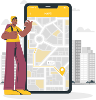

Confira os pontos de testagem mais próximos da sua casa
Para mais informações acesse: Ministérios da Saúde


Jardins Mangueiral - São Sebastião, Brasília - DF, 70297-400
07h às 19h de segunda a sexta, e sábado das 07h às 12h
Traçar rota